Este enorme estadio, con capacidad para casi 100.000 personas, se fundó en 1957 y es el estadio con mayor capacidad de España. En él juega sus partidos el FC Barcelona y se han vivido noches de muy buen recuerdo para los aficionados culés, como el 5-0 al Real Madrid en la época dorada del club, o la remontada 6-1 contra el PSG en Champions. Un campo que ha visto jugar a jugadores de talla mundial como Messi, Maradona, Ronaldinho, Iniesta, Romario... Sin duda uno de los estadios más bonitos de Europa.
página web Camp Nou
 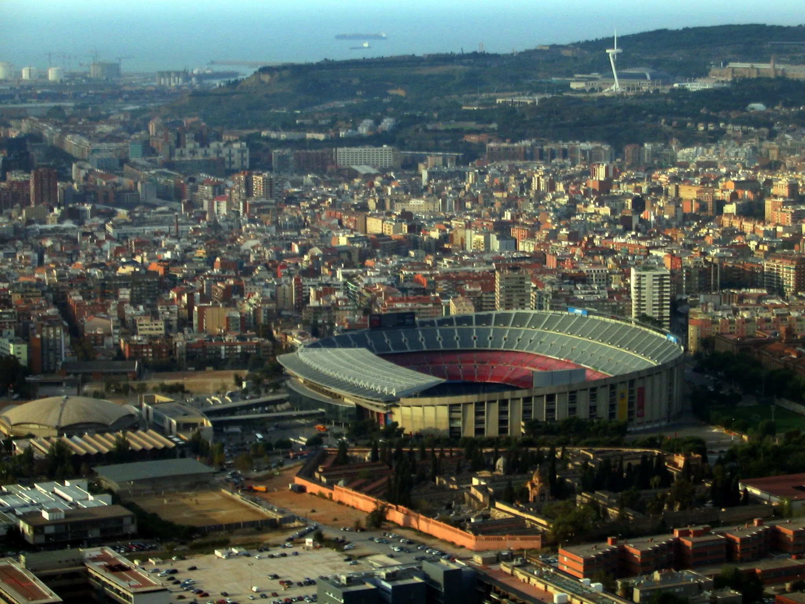
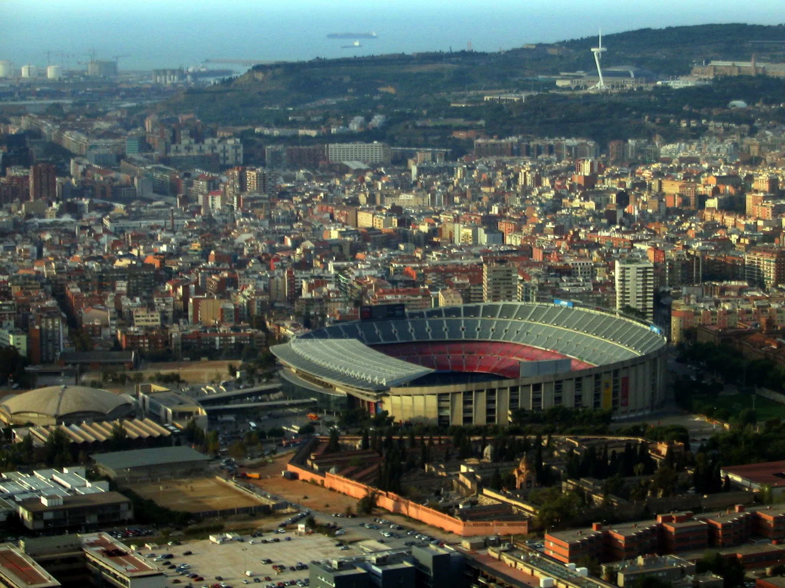
Otro de los estadios más importantes de España y Europa es el Santiago Bernabeu, donde disputa sus partidos el Real Madrid. Se construyó en el año 1947 y tiene capacidad para 81.044 personas. El club blanco ha disfrutado de grandes noches europeas en este estadio, siendo las más recientes las históricas remontadas en la Champions 2021/2022, que acabaron ganando con Karim Benzemá como protagonista y posterior ganador del balón de oro. Un estadio con mucha historia que tiene prevista una reforma que lo hará más moderno.
página web Santiago Bernabeu
El tercer estadio con mayor capacidad de España es el Civitas Metropolitano, donde juega sus partidos de local el Atlético de Madrid, con capacidad para más de 70.000 personas. Debe su nombre a un patrocinador el cual en sus inicios fue "Wanda", pero generalmente es conocido como el "Metropolitano". Fue inaugurado en 2017, pasando a ser la casa del equipo colchonero después de muchos años en el mítico Vicente Calderón. El Metropolitano es uno de los estadios más bonitos y modernos de Europa, y a pesar de tener poco tiempo, los aficionados rojiblancos ya han podido vivir ambientes que recordaban al que se respiraba en el Calderón cada domingo.
página web Metropolitano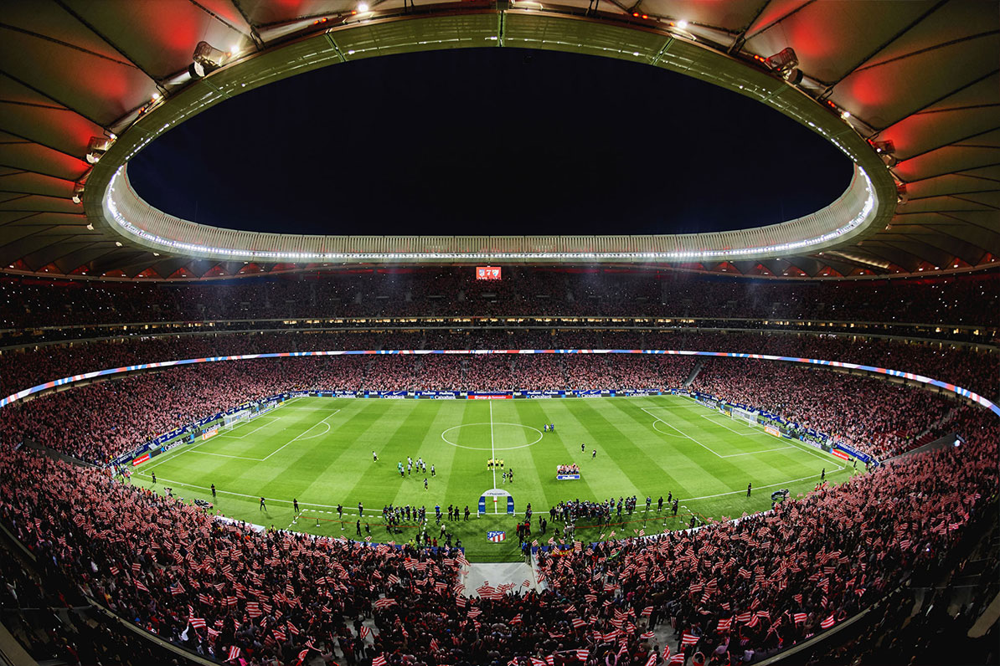 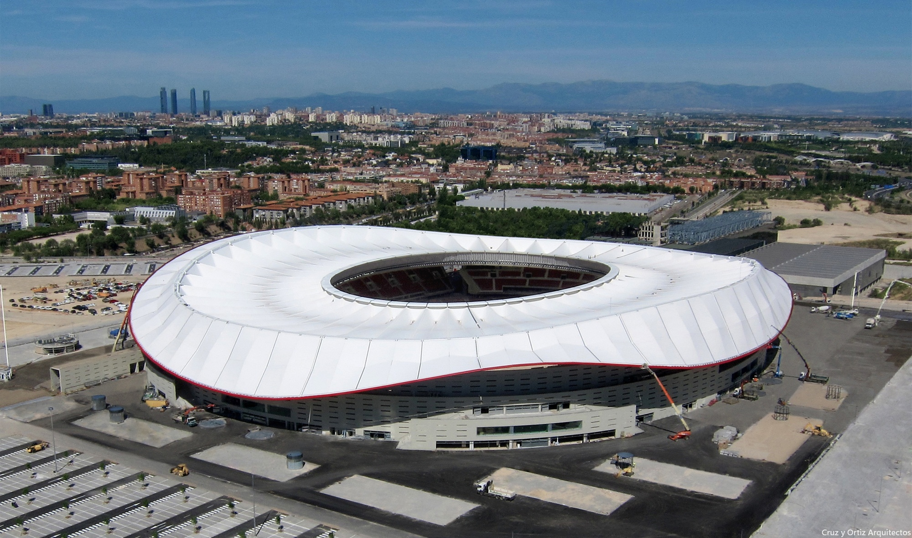
El Benito Villamarín, estadio del Betis, es el cuarto estadio más grande de la liga española. Con capacidad para más de 60.000 personas, este campo situado en el barrio de Heliópolis en Sevilla ha podido albergar partidos de talla mundial como aquel España - Malta del 83, que acabó 12-1. Los aficionados del Real Betis suelen llenar el estadio, sobre todo en partidos importantes, el club está entre los primeros en cuanto a asistencia en las gradas. Siempre hay buen ambiente, y cuando toca derbi contra el Sevilla, este campo se convierte en una caldera.
página web Benito Villamarín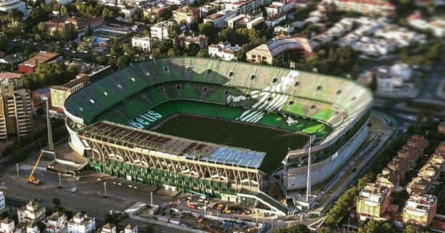 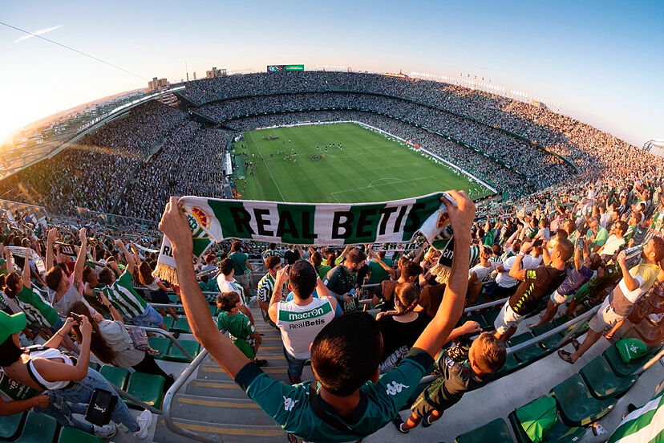
versión Quevedo x Bzrp
San Mamés, la catedral. En este precioso estadio, con capacidad para 53.000 personas, juega el Athletic Club sus partidos de ocal desde el año 2013. Anteriormente, jugaban en otro campo, que tenía el mismo nombre que el actual, lo que hace que a este último se le llame "Nuevo San Mamés". La UEFA eligió este estadio como una de las sedes para la Eurocopa de 2020, pero debido a la pandemia del Covid, el torneo se pospuso y la sede se transladó a La Cartuja, en Sevilla. El Athletic Club de Bilbao es, junto a Real Madrid y Barcelona, el único equipo español que nunca ha bajado a la categoría de plata, además con mucho mérito al contar durante toda su historia unicamente con jugadores nacidos o con raíces de la región de Euskal Herria. El Athletic es un club grande y por eso necesita un estadio a la altura.
página web San Mamés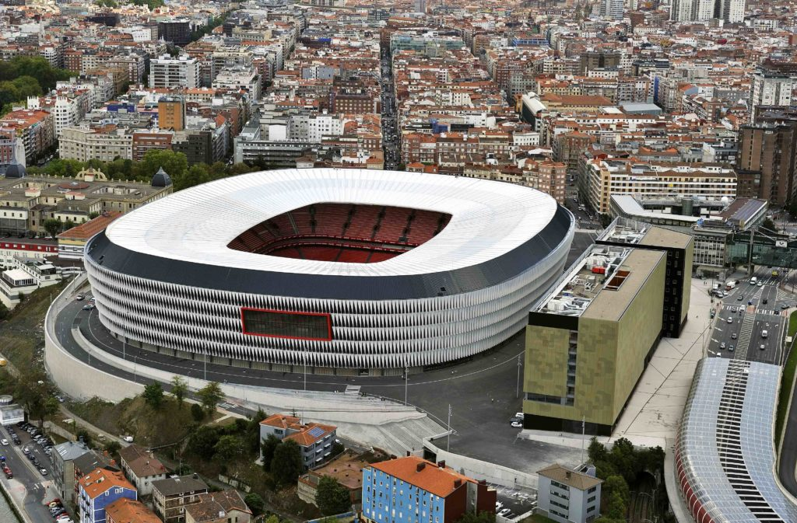 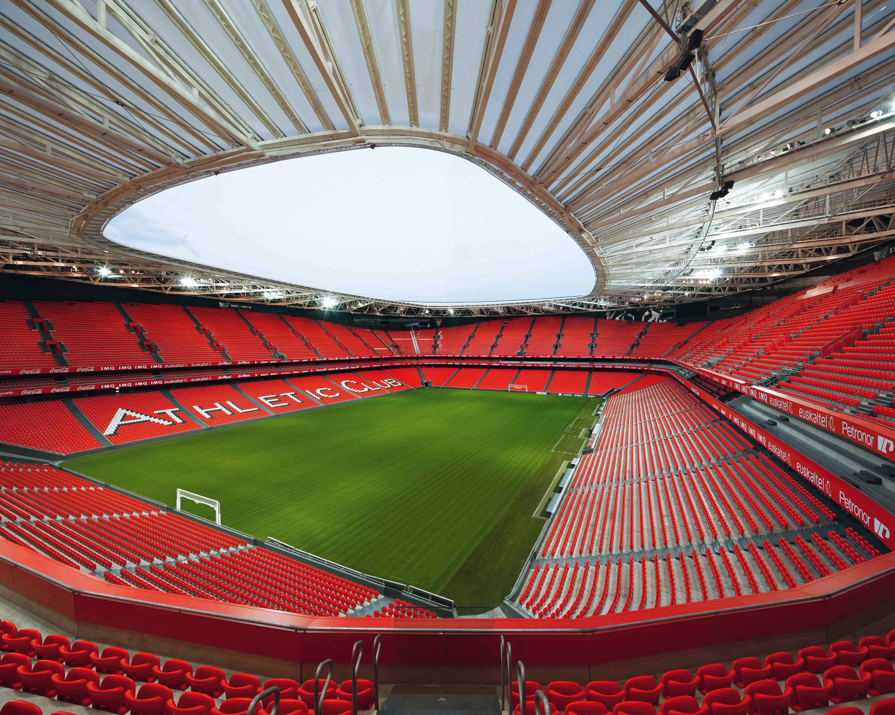
El estadio del Valencia, un histórico del fútbol español, es uno de los más bonitos y con mayor capacidad de la liga. Caben casi 50.000 personas, pero lo que más llama la atención es su diseño. Desde 2020 pasó a ser el estadio más antiguo de España, habiendo presenciado muchos partidos importantes. Mestalla ha podido disfrutar de partidos del Mundial, Juegos Olímpicos, Champions y diversas finales de Copa. Un estadio que aprieta, y mucho.
página web Mestalla

 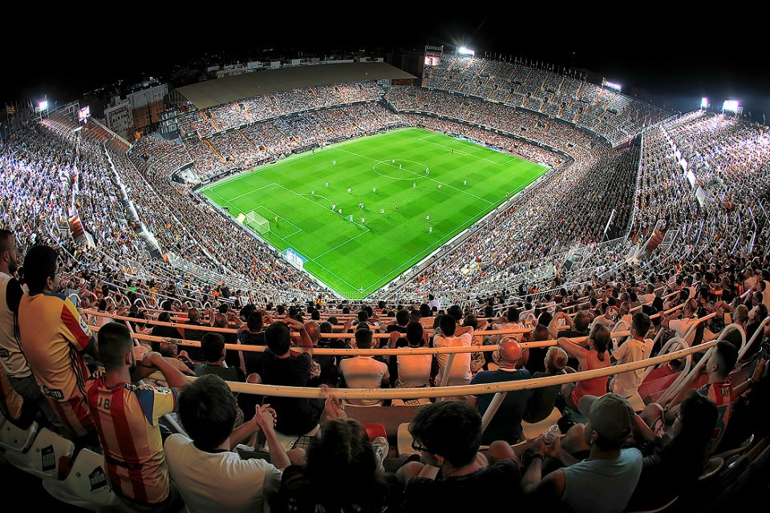
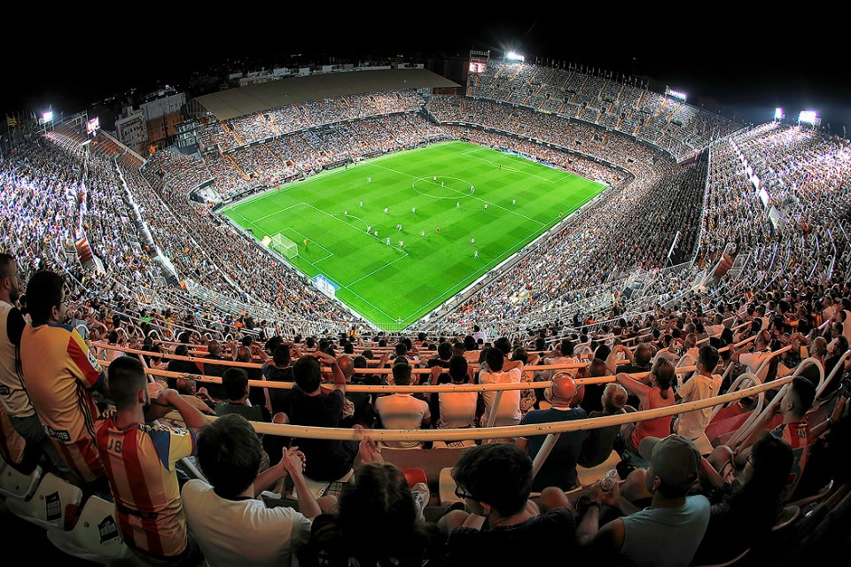
El Ramón Sánchez Pizjuán es el estadio del Sevilla. Su capacidad para casi 44.000 personas lo convierte en el segundo estadio más grande de la ciudad. El Sevilla es un club importante a nivel nacional e internacional, ya que aparte de cosechar títulos nacionales, ha ganado 7 Europa Leagues, siendo el equipo con más títulos de la segunda máxima competición europea. Los aficionados sevillistas han podido ver con la camiseta de su club a jugadores históricos como Jesús Navas, Kanouté, Dani Alves, Maradona, Sergio Ramos, Iván Zamorano...
página web Ramón Sánchez Pizjuán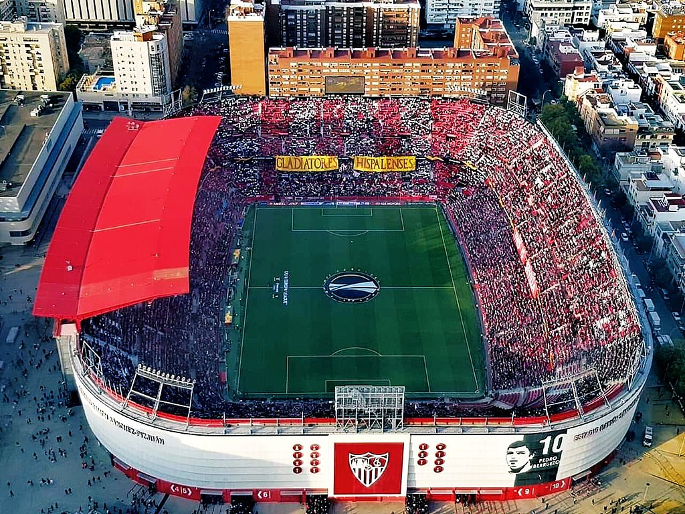 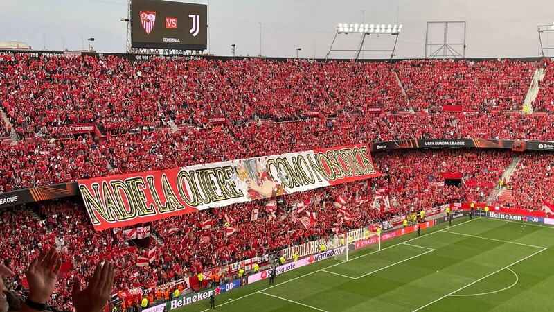
Himno a capella
Por motivos de patrocinador, el estadio de la Real Sociedad cambió de nombre para llamarse "Reale Arena", pero seguirá siendo conocido popularmente por su nombre original: "Anoeta". Este estadio tiene capacidad para cerca de 40.000 espectadores y se sitúa en la bonita ciudad de San Sebastián. El ambiente en Anoeta es una locura todos los fines de semana, pero sobre todo cuando hay derbi contra su máximo rival, el Athletic, como hace escasas semanas, donde los donostiarras se impusieron en su campo por 3 a 0 con gran actuación de jugadores como Kubo y Oyarzabal, y se pudieron ver aficionados del equipo rival infiltrados en la grada pasándolo no tan bien como sus compatriotas.
página web Anoeta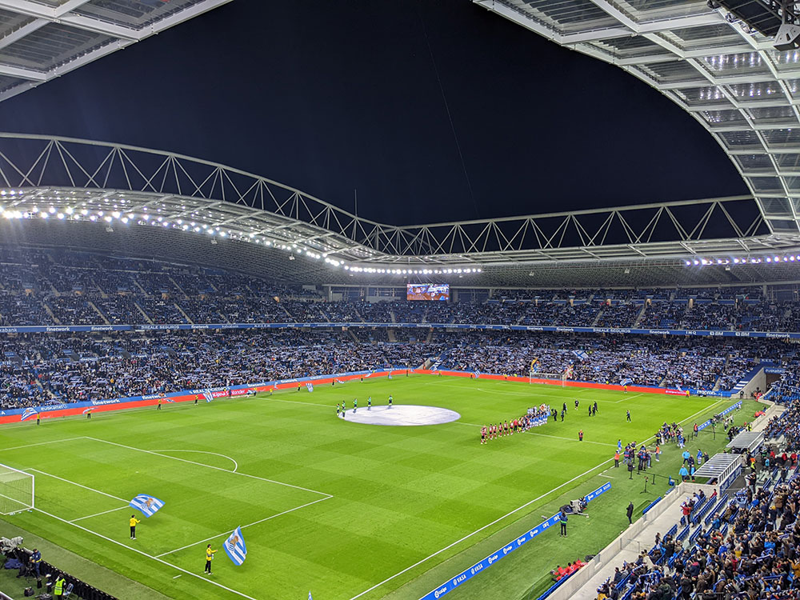 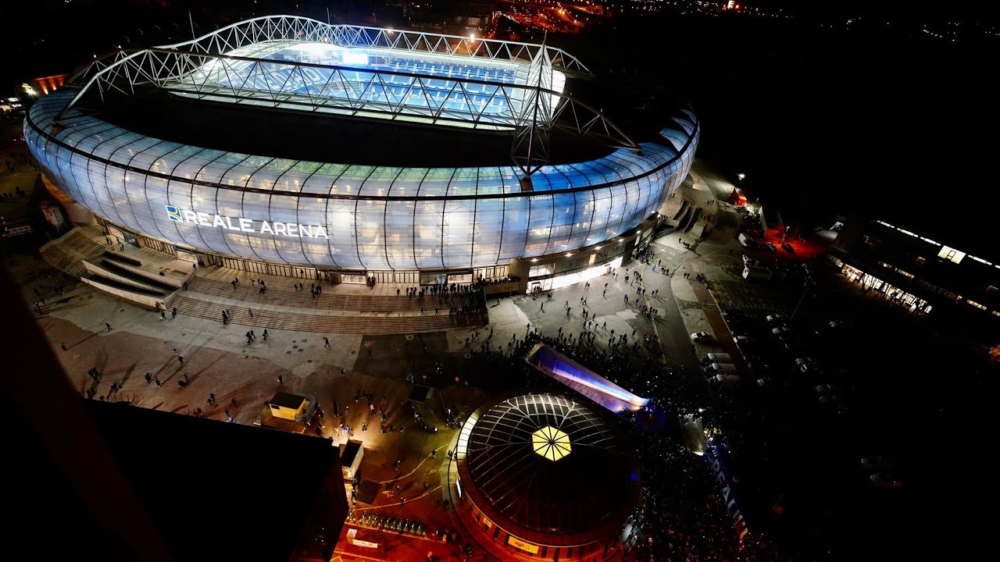
La Romareda es el estadio del Real Zaragoza, un club histórico en España que en la actualidad se encuentra en segunda división. Tiene capacidad para 34.000 espectadores. Fue sede del mundial del 82 y de los juegos olímpicos del 92, así como de varias finales de Copa del Rey. El campo sufrió diversas reformas en 1977, cuando se construyeron los nuevos graderíos, llegando a los 43.524 espectadores. En 1982 se tuvo que reformar con motivo del mundial, reduciéndose su capacidad a 39.900 espectadores. Las últimas grandes obras se realizaron en 1994 para adecuarlo a la normativa de la UEFA, quedando en 34.596 localidades. Ahora se espera una reforma en los próximos años que aumentará la capacidad y hará de La Romareda un estadio más moderno
página web Romareda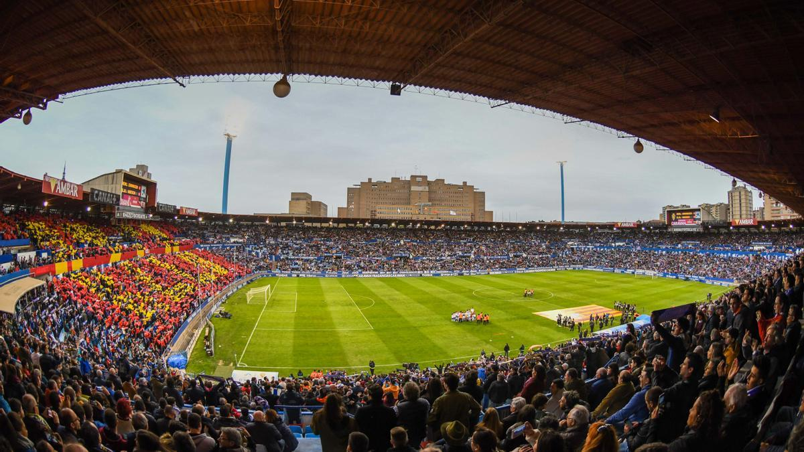 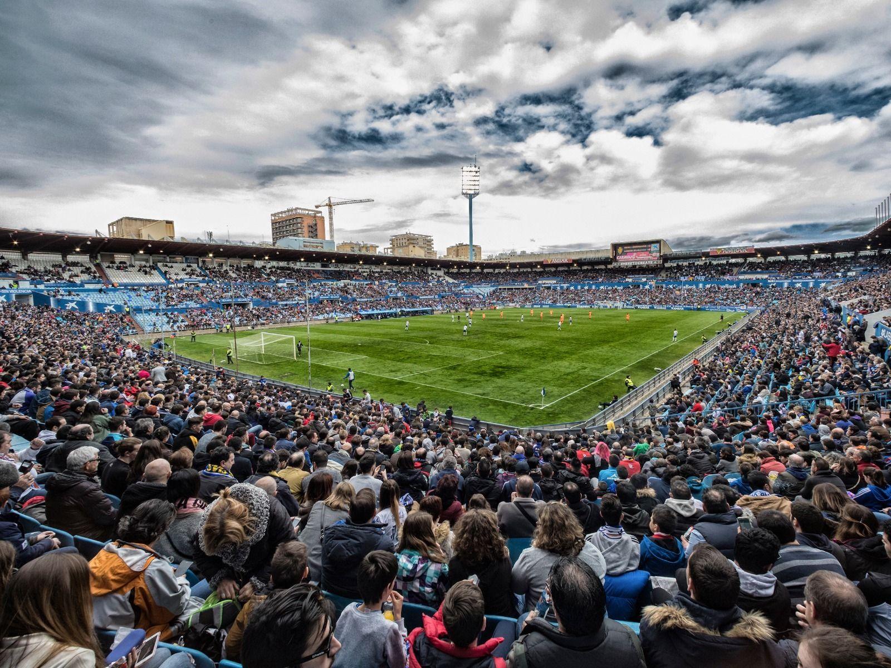
Este estadio es uno de los más míticos de España. Hablamos de Riazor, el estadio de un histórico como el Deportivo de la Coruña, que a día de hoy se encuentra estancado en la tercera categoría del fútbol español, una situación inpropia de un club con la grandeza del Deportivo, que está luchando por volver al lugar que le corresponde, que es entre los más grandes. Este estadio tiene capacidad para cerca de 33.000 espectadores y por sorprendente que parezca, estando en 1ªRFEF, suma más gente en los partidos que muchos equipos de primera división. Además de la gran asistencia, la última campaña de abonados acabó con la increíble cifra de más de 28.000 socios, esto quiere decir que el Depor es uno de los clubes más arraigados a la población de su ciudad. Posiblemente Riazor tenga la mejor ubicación de un estadio de fútbol en toda España, y es que está pegado al mar, la famosa playa de Riazor se encuentra a escasos metros del estadio. Este campo ha podido disfrutar de la época dorada del club entre los años 90 y la primera mitad de los 2000, ganando 7 títulos (1 Liga, 2 Copas, 3 Supercopas, 1 Copa Concurso). Además de los títulos nacionales, el SuperDepor metió miedo a los más grandes de Europa, derrotando a equipos como el PSG, Manchester United, Juventus o Milan en una remontada histórica, y rozando una final de Champions en 2004. Riazor ha podido ver a futbolístas históricos del club como son Bebeto, Mauro Silva, Fran, Rivaldo, Djalminha, Donato, Mackaay, Tristán, Scaloni, Valerón... El estadio del Deportivo se postula como sede para el mundial 2030, tenendo planificada una reforma que llegaría a los 45.000 espectadores.
página web Riazor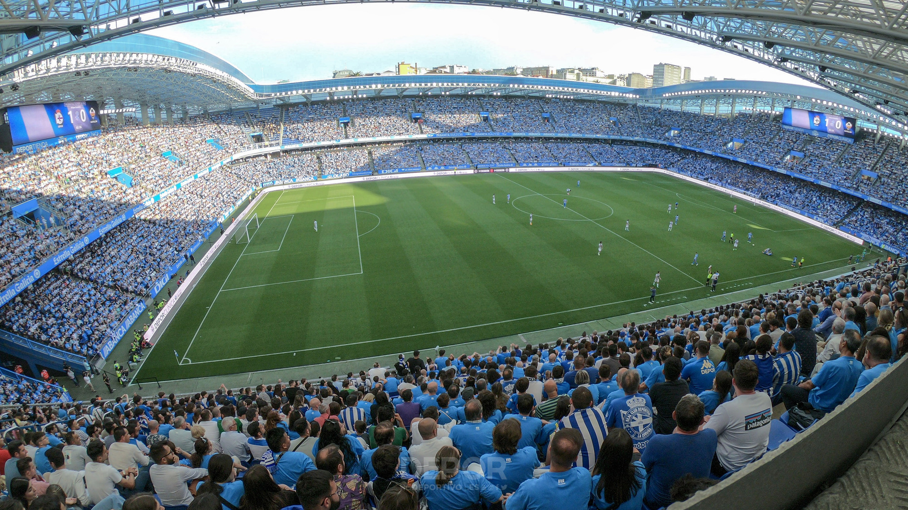 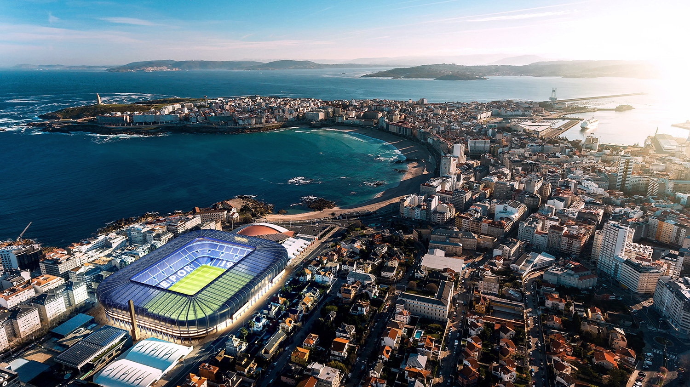 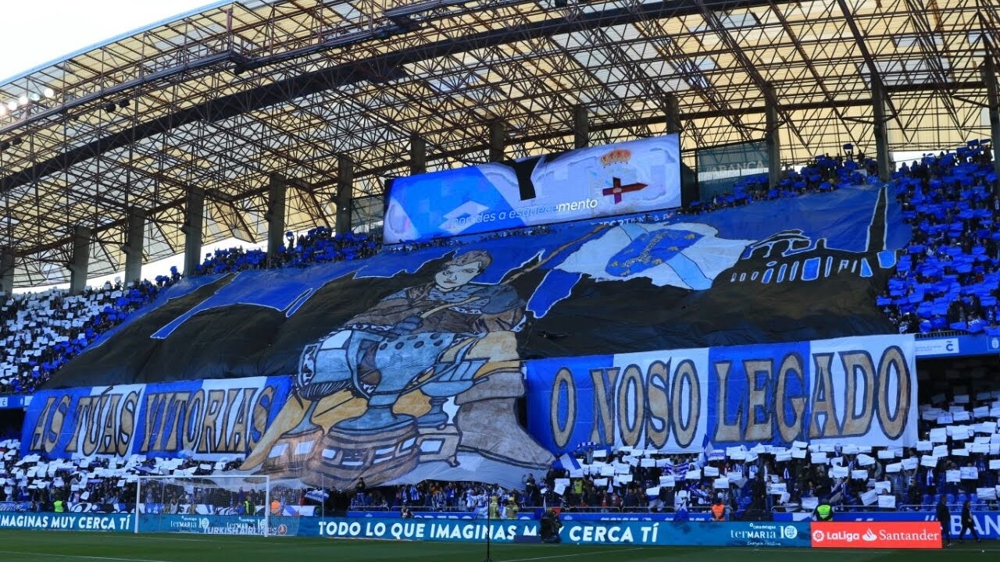 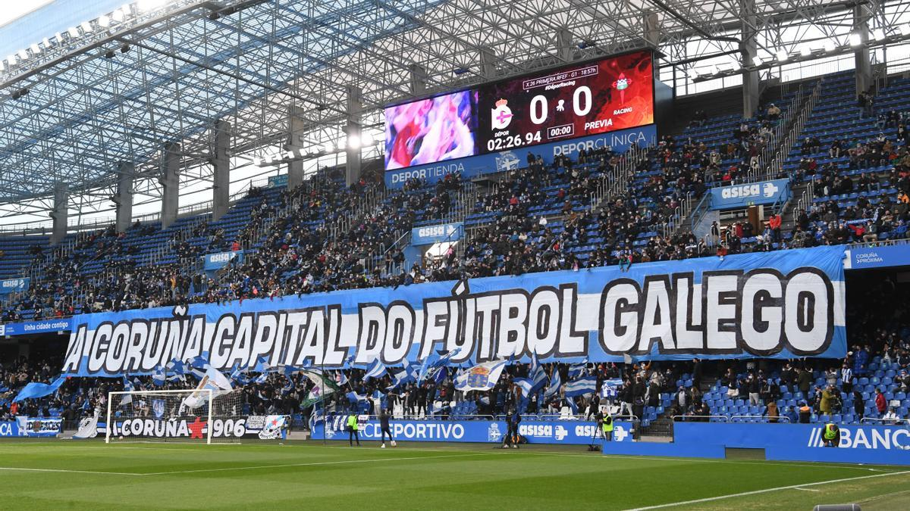 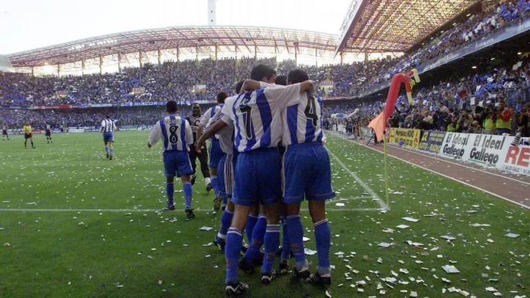 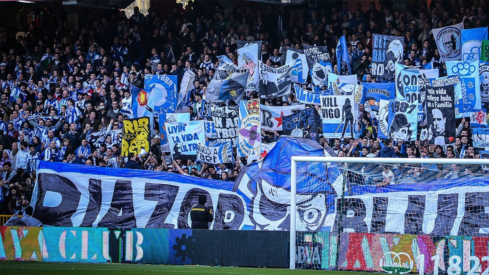